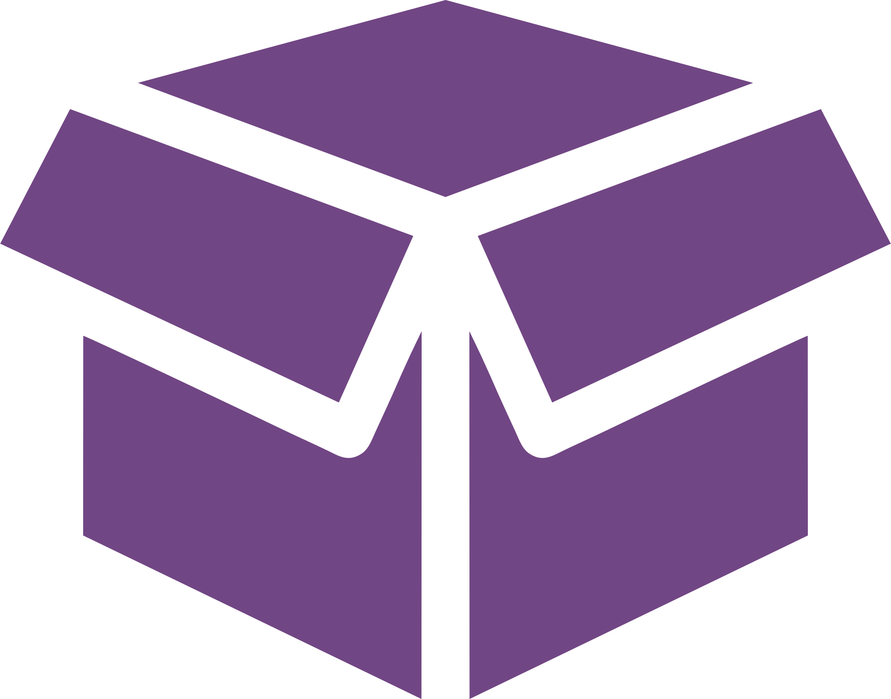

<div class="user-order">

  <ng-container *ngIf="!loading; else load">
    <div class="user-order__orders" *ngIf="!!orders && orders.length; else empty">

      <span>Заказы</span>
      <div *ngFor="let o of orders; let idx = index">
      <span>Заказ №{{o.orderNumber}} от {{cartService.toDate(o.orderDate)}}, {{o.orderItem.length}} товар на сумму
        {{cartService.toCurrency(o.orderCost)}}</span>
        <a [routerLink]="['/', 'user', 'my-orders', o.id]">Подробнее о заказе</a>
        <button>
          
          <span (click)="prepareRepeatOrder(o)">Повторить заказ</span>
        </button>
      </div>

    </div>

    <ng-template #empty>

      <div class="user-order__empty">

        <div>
          <div>
            
            <span>Заказов пока нет</span>

          </div>
          <a routerLink="/catalog">Начать покупки</a>
        </div>

      </div>

    </ng-template>
  </ng-container>

  <ng-template #load>
    <div class="user-order__load">

      <div class="user-loader-container" *ngIf="!error; else e">
        <div class="lds-dual-ring"></div>
      </div>

      <ng-template #e>
        <h1>Заказы не удалось получить, повторите попытку позже</h1>
      </ng-template>

    </div>
  </ng-template>

</div>

<div class="modal" *ngIf="repeatOrderModal">

  <div class="modal-background"></div>

  <div class="repeat-order-modal">
    <span>При повторе заказа ваша текущая корзина будет очищина и заполнена товарами, которые хотите повторить!</span>
    <div>
      <button (click)="repeatOrder()">Повторить</button>
      <button (click)="close()">Отмена</button>
    </div>
  </div>

</div>
